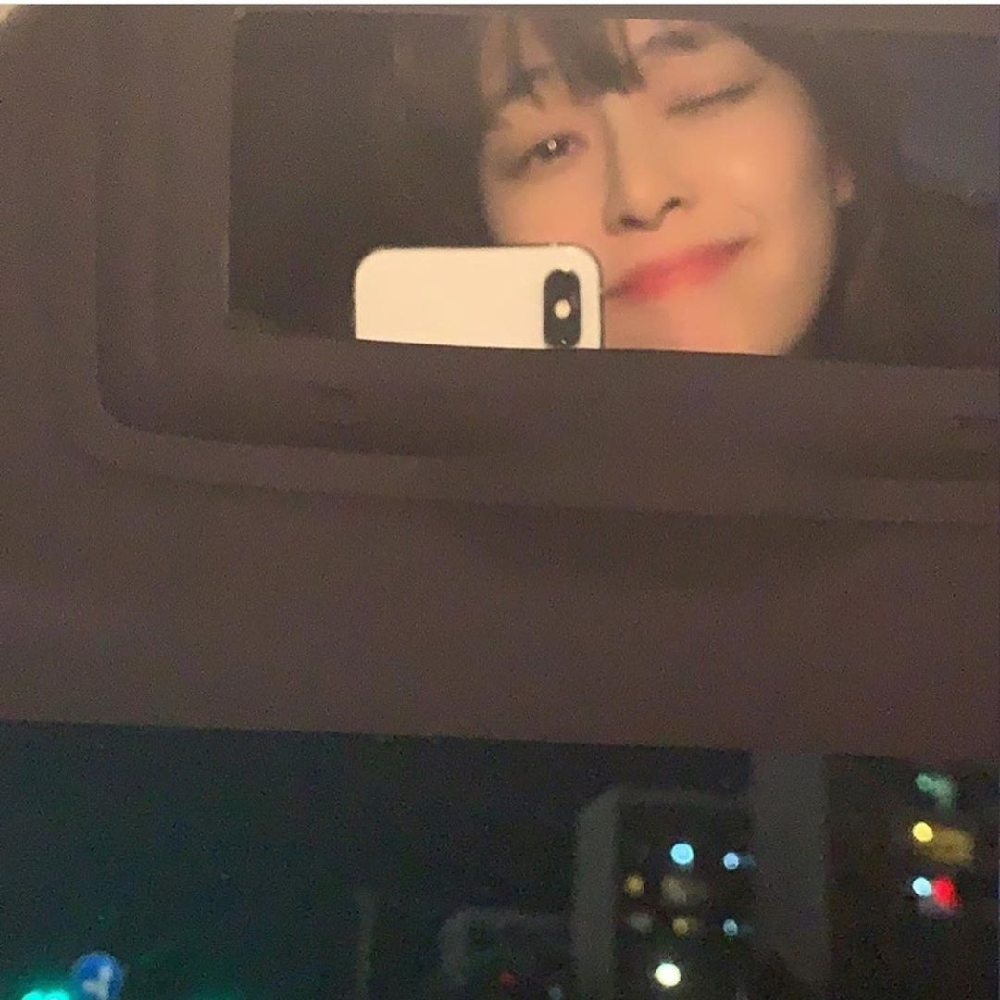
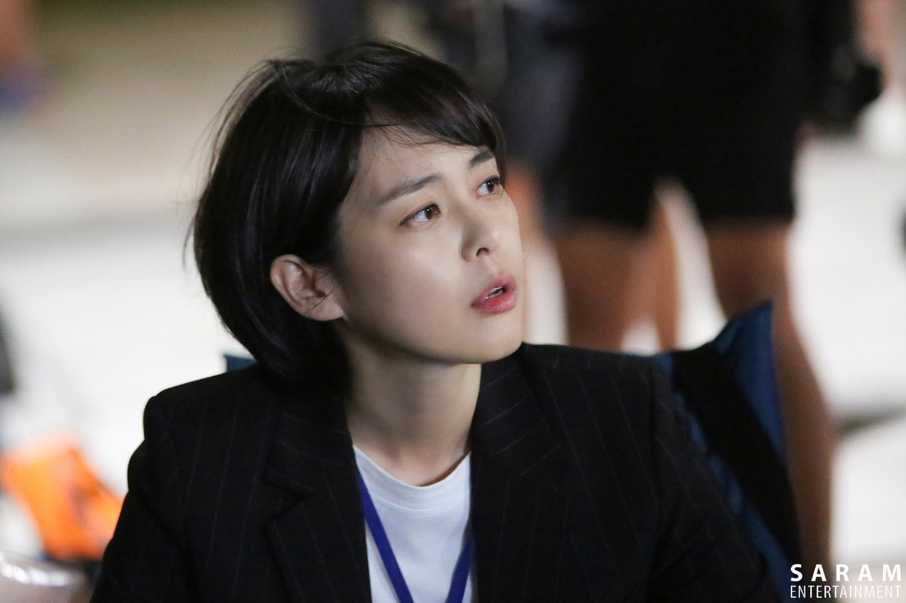
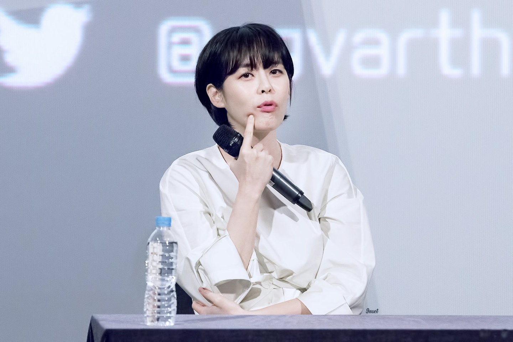
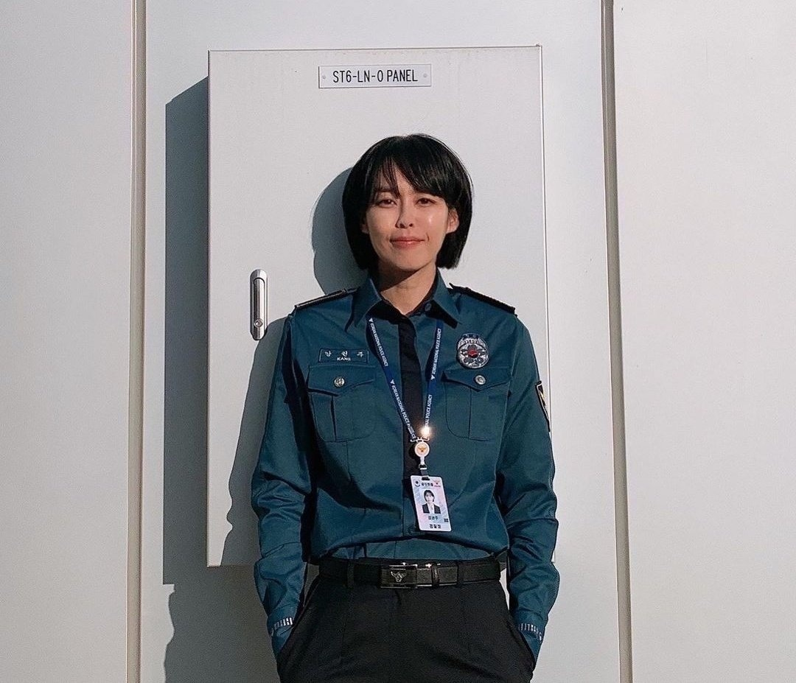

사진 소개
저는 저에 대한 소개 말고 인덱스 화면과 현재 화면에 있는 사진의 사람이 누구인지 소개하겠습니다.
사진 속에 사람은 이하나 배우님으로 제가 좋아하는 배우입니다.
이하나 배우님은 1982년 09월 23일 생으로 2006년에 데뷔했습니다.
연애시대, 메리대구 공방전, 태양의 여자, 식객, 페어러브 등 다양한 작품들에 출연했습니다.
제가 이하나 배우를 좋아하게 된 필모그래피는 보이스라는 드라마 시리즈를 통해서 입니다.
보이스는 시즌제로 진행되며 보이스, 보이스2, 보이스3,까지 나와있고 곧 보이스4를 방영하는데요.
소리를 잘 듣는 능력을 가진 '강권주'라는 캐릭터로 나오는 이하나 배우가 멋지게 활약을 하는 드라마입니다.
혹시 추리 수사물, 스릴러 장르를 좋아한다면 보이스 시리즈를 보시는 것을 추천드립니다.
강권주라는 캐릭터와 이하나 배우를 좋아하지 않을 수 없을거에요! :D



